Inhalt Index DeskTop Bronstein

 Computeralgebrasysteme Maple Prozeduren, Funktionen und Operatoren
Computeralgebrasysteme Maple Prozeduren, Funktionen und Operatoren


Der Operator der Differentiation lautet in Maple 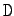. Seine Anwendung erfolgt auf Funktionen in Prozedurform entsprechend 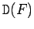 bzw. 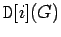. Im ersten Fall wird die Ableitung einer Funktion von einer Variablen in Prozedurform bestimmt. Das Anhängen der geklammerten Variablen ergibt die Ableitung als Funktion. In anderer Form läßt sich dies als 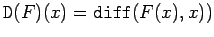 schreiben. Höhere Ableitungen erhält man durch Mehrfachanwendung des Operators , was sich vereinfacht als 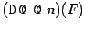 schreiben läßt, wobei 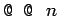 die n-te ,,Potenz`` des Differentialoperators bedeutet.
Ist G eine Funktion mehrerer Variabler, so erzeugt die partielle Ableitung von G nach der i-ten Variablen. Auch dieses Ergebnis ist wieder eine Prozedur. Mit 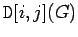 erhält man 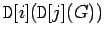, d.h. die zweite partielle Ableitung nach der j-ten und i-ten Variablen. Entsprechend kann man höhere Ableitungen bilden.
Für den Diffentialoperator gelten die aus der Differentialrechnung bekannten Grundregeln, wobei F und H differenzierbare Funktionen sind.
| 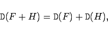 | (20.51a) |
| 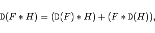 | (20.51b) |
| 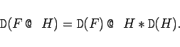 | (20.51c) |